Iridescence
For my class in Advanced Game Design, my team and I created the game Iridescence, where the user controls lanterns that pull a tiny moth closer to the light. This project won GDIAC showcase's Most Innovative award, and is my second year being on a winning team.
Concept Art
For Iridescence, the concept art allowed for me to understand the stype and color scheme of the game. Since we planned on having the game place during night, it was important to understand how our protagonist, the moth, would play into the world. Since moths are usually very tiny, the concept art allowed me to understand proportion for our protagonist.
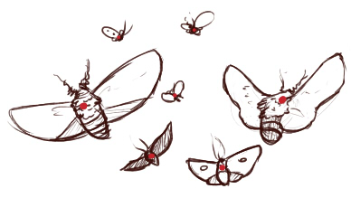Early Moth Designs
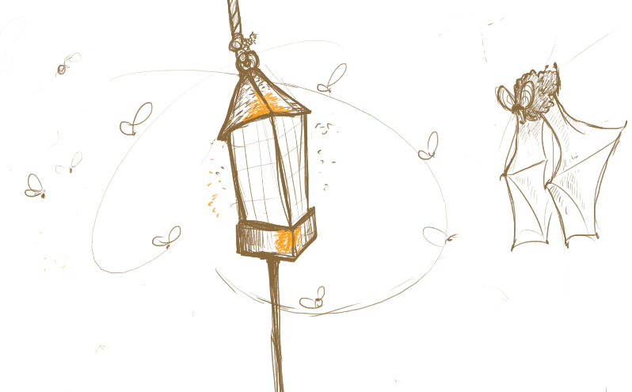Moth and Bat Designs
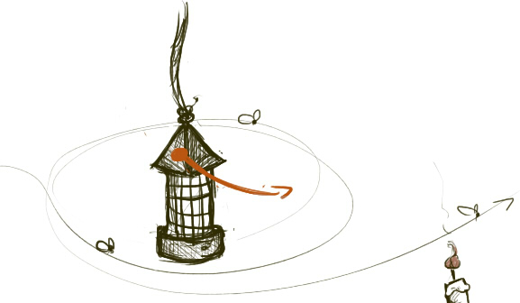Moth Movement and Lantern Designs
Animations
I wanted to have most of the objects of this game have moment, since most of the screen would be dark. The game needed have most of its elements animated to make them stand out from the background. All the lanterns and creatures of the game were animated by myself. Each animation took between 3 to 6 hours in Photoshop Elements 10.
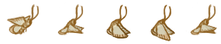Moth Animation
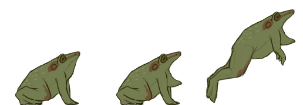Frog Animation
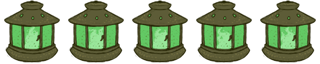Green Lantern (End Level) Animation
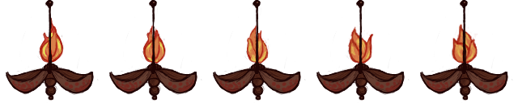Open Flame Animation
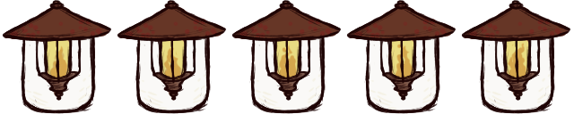Lantern Animation
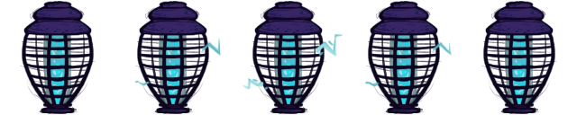Bug Zapper (Short) Animation
Level Screens
Once again, the world development and exploration was very important for this project. The moth can travel to four worlds in Iridescence and this give the game a depth of character and feel. The level backgrounds also devide the difficulty sections of the game.
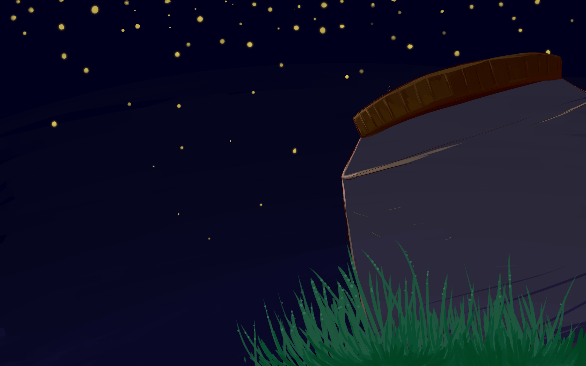Title Screen
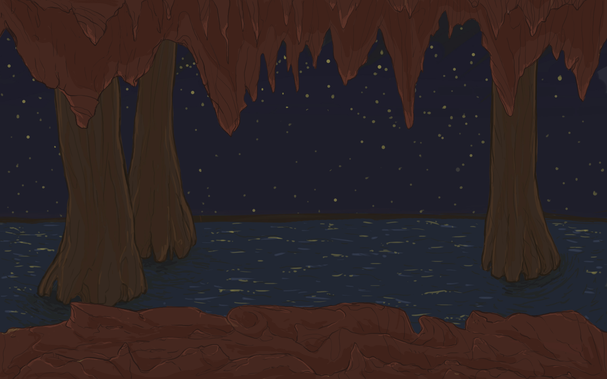Lonely Grotto
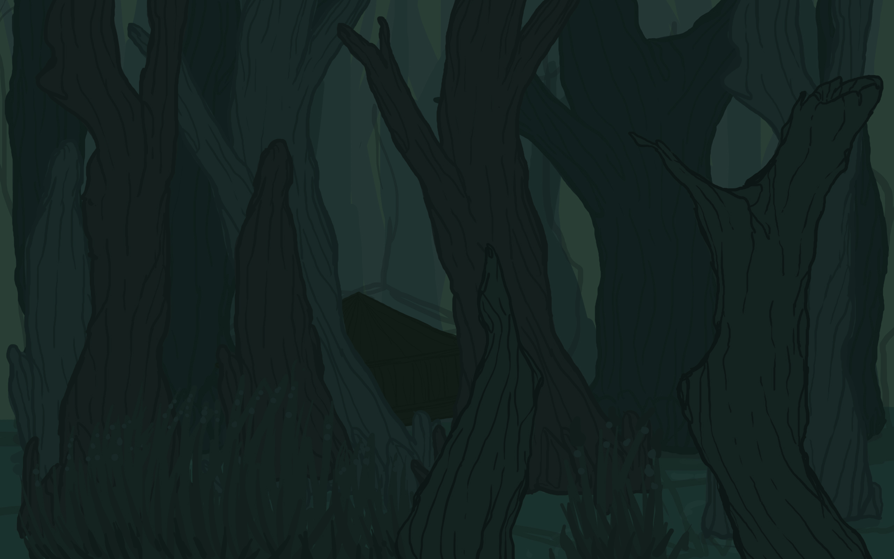Emerald Thicket
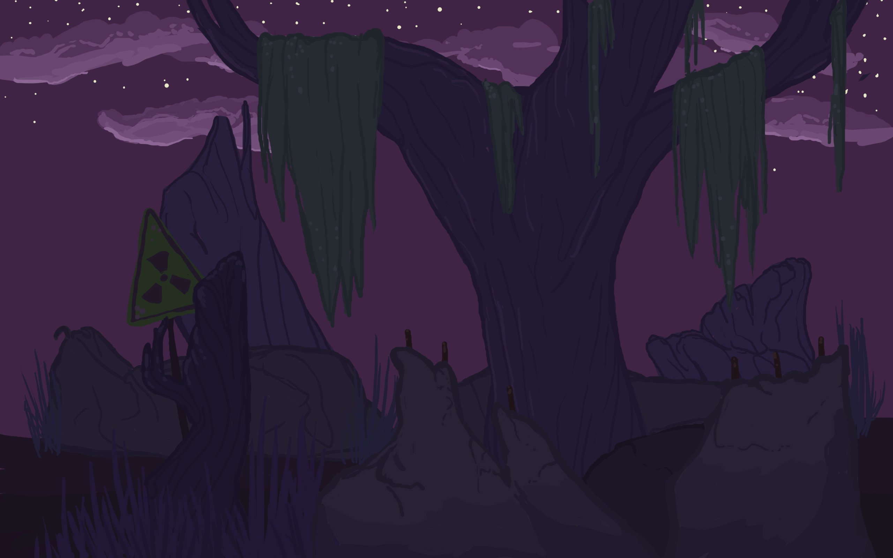Violet Night
Objects
Static object in Iridescence prove to be rare, since I animated most of the objects with flames or lights. There was only one object that proved to be static, and that was the firefly jar. This jar gets filled by the player with animated fireflies, so it proved to distracting to have the firefly jar animated as well.
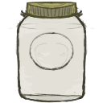Firefly Jar